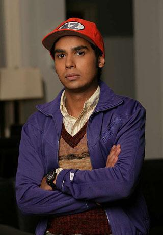
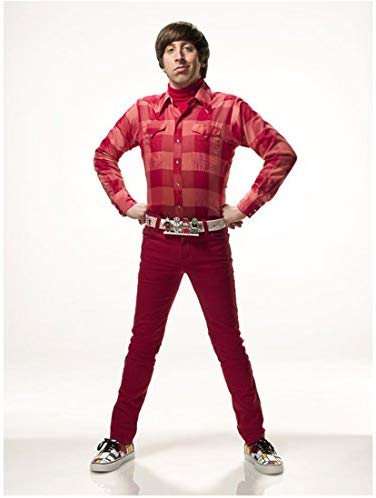
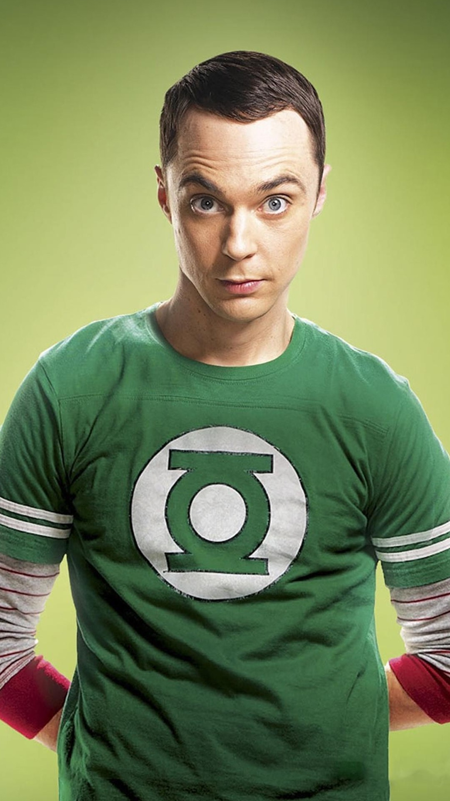
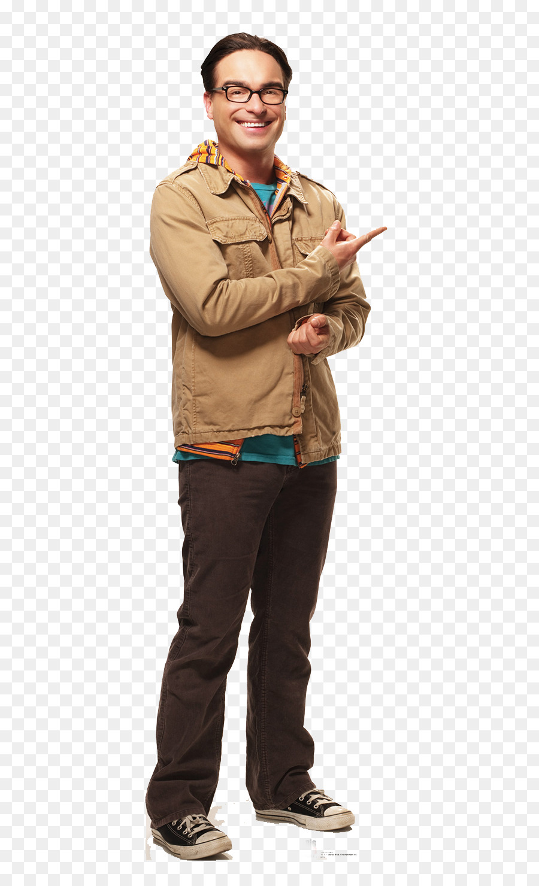

Guía geek, para contratar a geeks
maginen por un momento que estos cuatro geeks son todos informáticos, ¿a quien contratarían ustedes?
OK, los personajes de The Big Bang Theory son caricaturas, porque nadie es tán geek, ¿cierto?
Pero bueno, sigamos con el juego, la idea de este apunte es ser una especie de guía ilustrada a mi post anterior.
Veamos el primer candidato: Rajesh Koothappali.

Hay una razón para sentirme identificado con Rajesh, la que es bastante obvia para el lector frecuente de este blog: el número 42 de su gorra, cuando vi la primera vez que la uso no pude dejar de sonreir. Supongo que todos entienden el chiste de esa gorra, ¿no?
El gran problema de Rajesh es su incapacidad para hablar con las mujeres, algo que afortunadamente, superé hace mucho tiempo, y sin tener que recurrir al alcohol.
Rajesh es lo más cercano de este lote al ensimismado del que hablé antes, algo que ya expliqué que no era bueno, no recomendaría la contratación de una persona que tenga problemas para comunicarse a ese extremo.

El segundo postulante es Howard Wolowitz.
Este personaje no tiene un doctorado, como los demás postulantes, eso no lo encuentro malo, al contrario, no me gusta la gente que ha gastado tanto tiempo de su vida estudiando, pero ese es mi criterio, no tienen porque hacerme caso en esto.
Wolowitz tiene el problema contrario a Rajesh, y es que se cree un galán, y es lo que diríamos en buen chileno, un tanto pasado a la punta, con las mujeres. Lo que es complicado. He trabajado con varios Wolowitz, y aunque al principio, todos nos reimos de sus torpes galanteos con las mujeres que visitan la oficina, terminan resultando un tanto patéticos, y complicados si además hay mujeres en el equipo, terminan incomodándose.

Sheldon Cooper, el más inteligente del grupo.
En cierto sentido me identifico con mucha de la arrogancia de este personaje, pero también me divierte mucho, el que más risa me causa.
He visto y trabajado algunas veces con un Sheldon Cooper, pero no ha sido una experiencia agradable.
También reconozco que hay veces que me he puesto pedante, o demasiado “concreto”, al igual que Sheldon.
Este tipo de persona genera muchas tensiones en el equipo al final.
No creo que valga la pena trabajar con genios desagradables, es muy desgastante.

El favorito de mi señora, Leonard Hofstadter.
Probablemente el mejor candidato, el más equilibrado de este lote.
Es ñoño, pero consciente de sus limitaciones, y no es que quiera abandonar su forma de ser, y dejar de hacer las cosas que más disfruta, pero tiene una motivación adicional, su interés romántico por Penny.
El amor es un motivador muy fuerte, una persona enamorada, con pareja, incluso con familia, tiende a ser más confiables y equilibrados. No les digo que contraten sólo personas casadas, pero es un indicador interesante para considerar.
Al final, creo que la ventaja de Leonard sobre Sheldon, es que Leonard es más sociable, una persona más abierta, no es una ostra, como Rajesh, ni tiene los comportamientos desatinados de Wollowitz, pero lo más importante, es tan inteligente como Sheldon, sin la arrogancia. Necesitas una persona más centrada.
Sólo le agregaría a Leonard un poco más de seguridad en si mismo (algo que le sobra a Sheldon), pero ahí viene la labor del jefe, lo que se designa con el término coaching un asunto tan importante como la selección de personal, pero ese es tema para otro post.